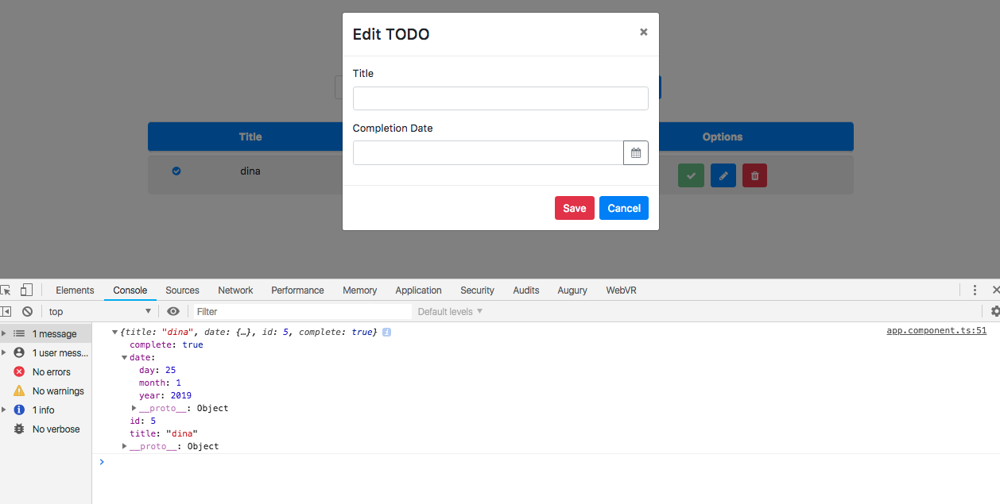
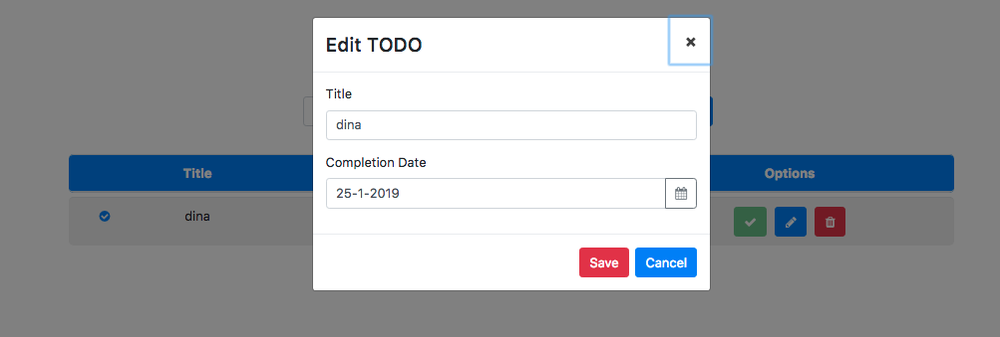
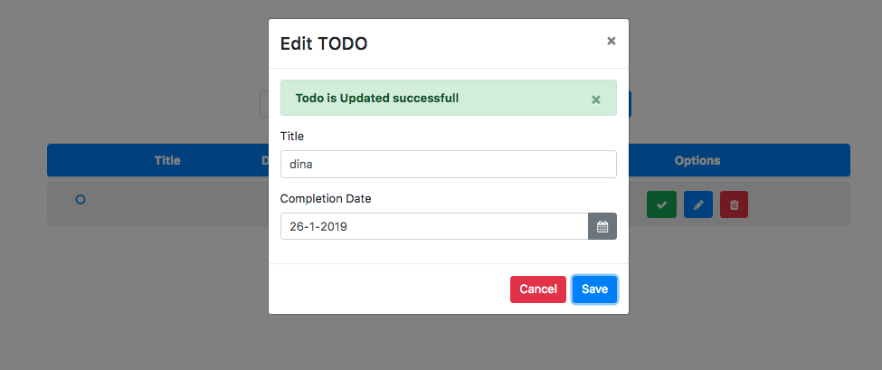

Kemampuan Akhir Yang Direncanakan
- Peserta mampu membuat update method
Percobaan menambahkan code pada update method
- langkah berikutnya buka file app.component.html hapus placehoder="yyyy-mm-dd" dan ganti label profile update menjadi Edit Todo, tambahkan juga code sehingga codenya seperti berikut
<div class="form-group">
<label for="date">Completion Date</label>
<div class="input-group">
<input
id="date"
class="form-control"
formControlName="date"
name="dp"
ngbDatepicker
#dp="ngbDatepicker"
/>
<div class="input-group-append">
<button
class="btn btn-outline-secondary calendar"
(click)="dp.toggle()"
type="button"
><i class="fa fa-calendar" aria-hidden="true"></i></button>
</div>
</div>
</div>
- buka file app.component.ts tambahkan property todo,titlteValue,dateValue seperti berikut
export class AppComponent {
newTodo:Todo=new Todo();
editForm:FormGroup;
todo:any;
titleValue:string;
dateValue:string;
constructor(
private todoService:TodoDataService,
private modalService: NgbModal,
private fb:FormBuilder){}
- kita cek apakah pada method open isi dari parameter todo tambahkan code console.log(todo)
open(content,todo){
console.log(todo);
this.initForm();
this.modalService.open(content, {ariaLabelledBy: 'modal-basic-title'});
}

- buka file app.component.ts dan tambahkan code berikut pada method open
- perhatikan pada code this.titleValue dan this.dateValue itu bukan petik satu('') tapi Aksen akut(``)
open(content,todo){
open(content,todo){
// console.log(todo);
this.initForm();
this.todo={
id: todo.id,
title:todo.title,
date:todo.date,
complete:todo.complete
}
if(todo.date.year && todo.date.month){
console.log(todo.date.year && todo.date.month);
this.titleValue=`${todo.title}`;
this.dateValue=`${todo.date.day}-${todo.date.month}-${todo.date.year}`;
}
this.modalService.open(content, {ariaLabelledBy: 'modal-basic-title'});
}
- buka file app.component.html dan tambahkan value pada class modal-body dan form-group editForm dan form-group completion
<div class="modal-body">
<form [formGroup]="editForm">
<div class="form-group">
<label for="">Title</label>
<div class="input-group">
<input
type="text"
class="form-control"
formControlName="title"
name="title"
value="{{ titleValue }}"
/>
</div>
</div>
<div class="form-group">
<label for="date">Completion Date</label>
<div class="input-group">
<input
id="date"
class="form-control"
formControlName="date"
name="dp"
value="{{ dateValue }}"
ngbDatepicker
#dp="ngbDatepicker"
/>
jika benar maka hasilnya akan seperti berikut 
buka file app.component.ts tambahkan beberapa code pada method updateTodo dan method open tambahkan juga property isEdited type boolean
newTodo:Todo=new Todo();
editForm:FormGroup;
todo:any;
titleValue:string;
dateValue:string;
isEdited:boolean;
updateTodo(){
this.todoService.updateTodo(this.todo.id,this.editForm.value);
this.isEdited=true;
}
open(content,todo){
// console.log(todo);
this.isEdited=false;
this.initForm();
this.todo={
id: todo.id,
title:todo.title,
date:todo.date,
complete:todo.complete
}
if(todo.date.year && todo.date.month){
// console.log(todo.date.year && todo.date.month);
this.titleValue=`${todo.title}` ;
this.dateValue=`${todo.date.day}-${todo.date.month}-${todo.date.year}`;
}
this.modalService.open(content, {ariaLabelledBy: 'modal-basic-title'});
}
- selanjutnya kita tambahkan alert, buka file app.component.html
<ngb-alert [dismissible]="false">
<strong>Warning!</strong> Better check yourself, you're not looking too good.
</ngb-alert>
<div class="modal-body">
<!-- alert -->
<ngb-alert *ngIf="isEdited" type="success">
<strong>Todo is Updated successfull</strong>
</ngb-alert>
<form [formGroup]="editForm">
<div class="form-group">
<label for="">Title</label>
<div class="input-group">
- rubah code button yang sebelumnya cancel menjadi save dan begitu sebalik pada app.component.html seperti gambar berikut
<button
type="button"
class="btn btn-danger"
(click)="modal.close('Save click')"
>
Save
</button>
<button type="button" class="btn btn-primary" (click)="updateTodo()">
Cancel
</button>
- jika berhasil maka akan seperti berikut: 